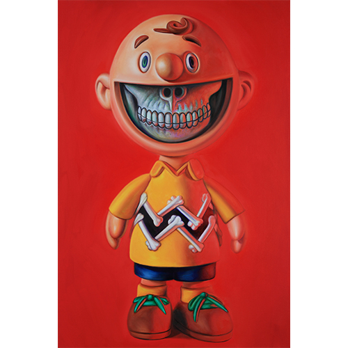
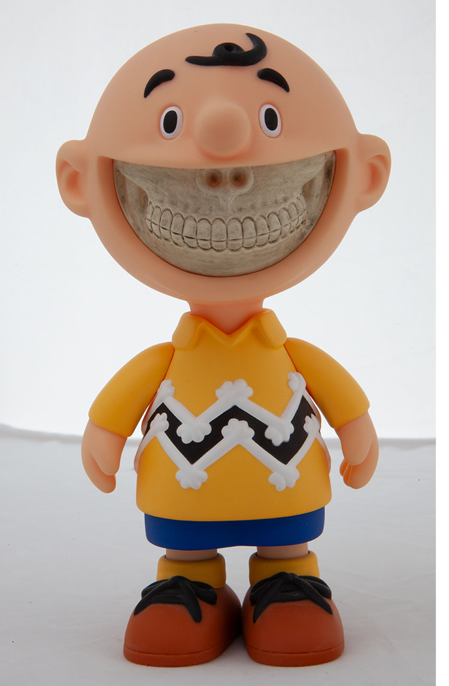

Exhibitions
Pop’N Lab: Ron English Solo Exhibition, Dopeness Art Lab, Taipei City, Taiwan, September 22–October 30, 2018.
Notes
Dimensions are approximate and are based on visual comparison and available documentation.
This work references Charlie Brown, the Peanuts character created by Charles M. Schulz.
This composition was later adapted by the artist as Woodstock Daze, a limited-edition blotter print released through 1XRUN.
Ron's Personal Photo Archive

Ancillary Documentation
